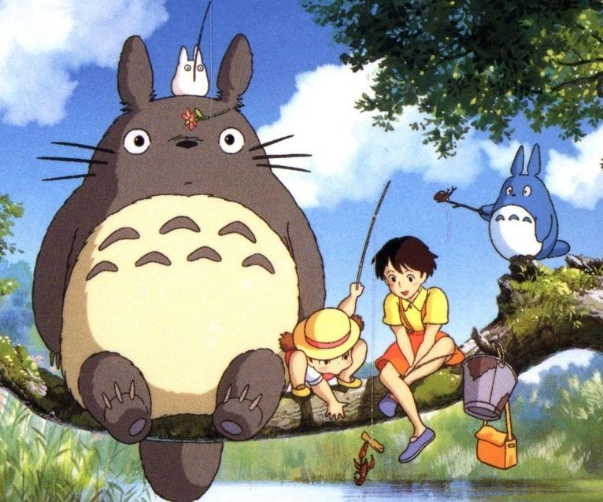

|

|
SOBRE ANIMES
Benefícios para mente e emoções
Os animes também podem ter um impacto positivo na vida real.
- Desenvolvimento emocional: Muitos animes tratam de temas como amizade, superação, empatia, luto e crescimento pessoal.
- Estímulo ao aprendizado: Incentivam o interesse por outras culturas, especialmente a japonesa, além de fomentar a curiosidade por idiomas, história e filosofia.
- Criatividade narrativa: Quem gosta de criar histórias, escrever ou desenhar encontra nos animes uma fonte constante de ideias inovadoras.
- Conexão social: O fandom de anime é uma comunidade global. Participar de eventos, fóruns ou redes sociais sobre anime pode ajudar a fazer novas amizades e se sentir parte de algo maior.
|